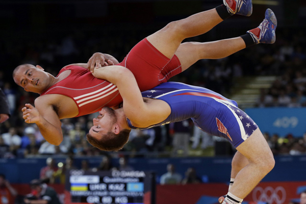
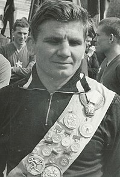
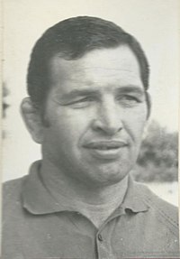
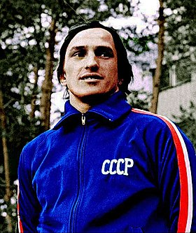
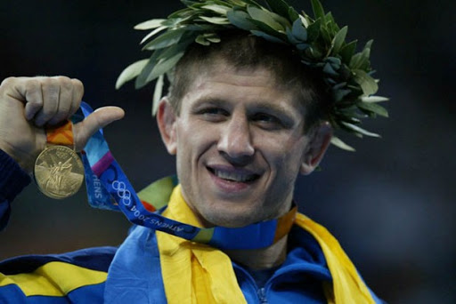
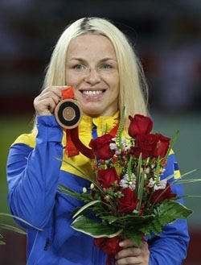

Про цей вид спорту:
Спортивне єдиноборство, вид боротьби, в основі якого лежить позиційне маневрування двох спортсменів, кожен з яких за допомогою різних технічних прийомів (захоплень, кидків, переворотів, підніжок, підсічок тощо) намагається покласти суперника на лопатки, чи набрати більшу кількість очок в процесі боротьби. Від класичної боротьби вільна відрізняється широким спектром технік, що включають використання ніг: Зачеп та інше.
Вільна Боротьба на Олімпіаді
У 1904 році вільна боротьба була вперше включена в програму Літніх Олімпійських ігор в Сент-Луїсі (США). Всі 42 спортсмена були з США. Це сталося через те, що США використовуючи своє право господарів, включили боротьбу кетч (студентський, аматорський варіант). Олімпійський комітет погодився і назвав боротьбою вільного стилю (Free style). Але, європейці не були знайомі з цим видом боротьби і тому ніхто з них не ризикнув взяти участь. Тому Олімпійський турнір з вільної боротьби опинився під загрозою зриву і тоді американці приурочили свій чемпіонат країни до Олімпіади і організували його як олімпійське змагання.
Видатні українські борці вільного стилю:
Володимир Синявський
Володар Кубку світу (1958 рік), чемпіон світу (1959, 1961 роки), срібний медаліст XVII Олімпійських ігор (1960 рік).
Борис Гуревич
золотий медаліст XIX Олімпійських ігор (1968 рік), дворазовий чемпіон світу (1967, 1969 роки).
Анатолій Бєлоглазов
золотий медаліст XXII Олімпійських ігор (1980 рік), триразовий чемпіон світу (1977, 1978, 1982 роки).
Ельбрус Тедеєв
золотий медаліст XXVIII Олімпійських ігор (2004 рік), триразовий чемпіон світу (1995, 1999, 2002 роки).
Ірина Мельник
золота медалістка XXVIII Олімпійських ігор (2004 рік), триразова чемпіонка світу (2000, 2001, 2003 роки).
Історія
у Англіі
З історичних джерел відомо, що в XVIII столітті в Англії з'явилася боротьба, в якій борцям дозволялися захоплення за ноги і прийоми з діями ніг
Міжнародна
На міжнародній спортивній арені вільна боротьба з'явилася пізніше греко-римської (французької) боротьби. Батьківщиною вільної боротьби вважається Ланкашир. Потім вона з'явилася в США. Боротьба називалася (кетч-боротьба).
у США
У США вільна боротьба стала розвиватися за двома напрямками: власне боротьба і боротьба професійна. Спортивна вільна боротьба, культивувалася головним чином в коледжах і університетах США (вУкаіни її називали «вільно-американської аматорської боротьбою»). Правила міжнародної вольної боротьби схожі саме з цим видом боротьби.